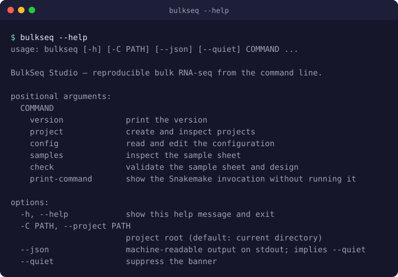
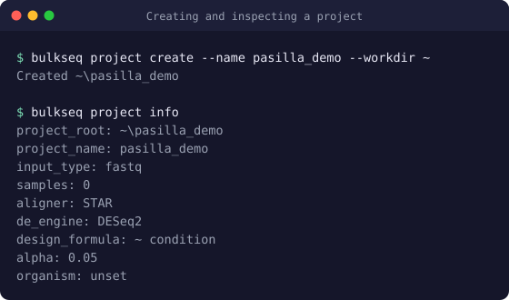
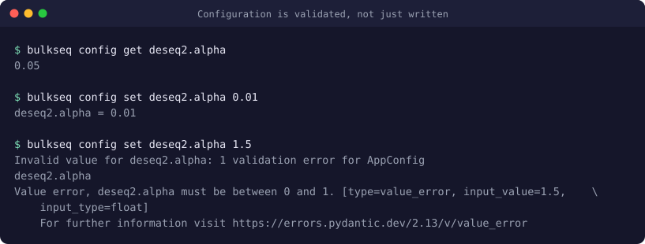
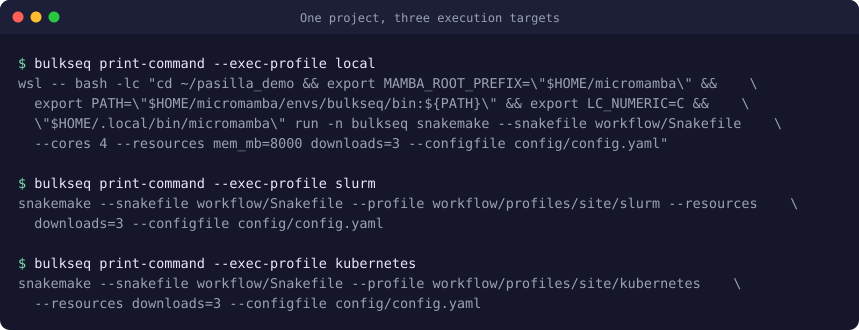

BulkSeq Studio: Command line and HPC
Beyond the interface
Command line
The bulkseq command runs the same pipeline without the graphical interface: for scripting a study, for a machine with no display, and for handing jobs to a cluster scheduler.
Both front ends build their Snakemake invocation with one function, build_snakemake_command(). A command-line run and a graphical run of the same project therefore issue the same command, and a test compares the two argument vectors in every mode rather than leaving the equivalence to convention. This matters more than convenience: two front ends that assemble their own arguments drift, and the drift appears as results that differ between them for the same input.
Getting it
The command ships with the application. From a source checkout:
pip install -e .
bulkseq --helpThe interface itself is an optional extra (pip install -e ".[gui]"), so a login node does not have to pull Qt and its X11 and OpenGL libraries to get a working command line.

A session
Creating a project, pointing it at data and checking it before anything long starts:

scripts/capture_cli_screenshots.py), so they cannot drift from the program.Configuration
Settings are read and written by key rather than by editing YAML. Each write is validated against the same model the interface uses, and the file is only rewritten once validation passes — a rejected value leaves config.yaml exactly as it was.

bulkseq check validates the sample sheet and design, and bulkseq print-command prints the exact Snakemake invocation without executing it. On a cluster, reading that line before submitting is the cheapest way to catch a wrong profile or a missing partition.Clusters
Running on HPC
One project definition, several places to run it. The pipeline does not change; only the execution profile does.

Choosing a target
| Profile | Executor | What it does | You must supply |
|---|---|---|---|
local | — | Runs on this machine: inside WSL2 on Windows, natively on Linux. Jobs are packed into the cores and memory configured for the project. | Nothing. |
slurm | slurm | Submits one sbatch job per rule. Each rule's own declared resources become its allocation. | A partition, and an account if your site bills to one. |
kubernetes | kubernetes | Submits one pod per rule. | A container image and shared storage. |
Why the cluster profiles do not set a memory limit
A local run passes Snakemake a global pool — --cores and --resources mem_mb=… — sized to the machine, and Snakemake packs jobs so their combined demand stays inside it. That is correct locally and wrong on a cluster.
Given a global pool smaller than a rule asks for, Snakemake clamps the rule's request down rather than refusing. Under a cluster executor that clamped number is not a scheduling hint: it is the allocation the scheduler is asked for. A project configured for a 8 GB laptop would submit star_align — which declares 24 GB — requesting 8 GB, and the job would be killed for exceeding its memory some hours into alignment.
So the cluster profiles pass no global memory pool at all, and each rule's declared resources reach the scheduler untouched. For the same reason no shipped profile sets set-resources for mem_mb or threads: those override what a rule declares, which would make the recorded run parameters disagree with what was actually requested.
cores setting, Snakemake reuses jobs as the per-rule thread limit — so jobs: 4 silently caps every alignment at four threads regardless of what the rule declares. Six rules in this pipeline declare eight threads, so the shipped profiles set cores: 16. A test reads the real maximum from the rule sources and fails if a profile drops below it.Slurm
Edit workflow/profiles/site/slurm/config.yaml inside your project. Every key becomes a command-line argument, so executor: slurm is --executor slurm.
executor: slurm
jobs: 16
cores: 16
default-resources:
- runtime=240 # minutes
- slurm_partition=short # required at most sites
# - slurm_account="" # if your site bills to an account
retries: 1
keep-going: trueFind your partition with sinfo -s and your account with sacctmgr show assoc user=$USER, or ask your support desk. Then:
bulkseq print-command --exec-profile slurm # read it before submitting
snakemake --profile workflow/profiles/site/slurm --configfile config/config.yamlprint-command emits the invocation and stops there; it does not submit anything. Read it, then run it yourself — from a login node, or inside whatever wrapper your site expects. Keeping the two steps apart is deliberate: a command that queues 16 jobs against an account with a fair-share budget is worth looking at before it runs.
Site notes
- TRUBA and İTÜ UHEM are Slurm sites with a shared filesystem, which is the arrangement this profile suits: install the environment once, and every compute node sees it. Partition names, walltime ceilings and account requirements differ between them and change over time — take them from the site's own documentation rather than from here.
- Compute nodes frequently have no outbound network. If the project fetches FASTQ files from ENA or SRA, download them on the login node first, then submit; otherwise the download rule fails on a node that cannot reach the internet.
- Walltime.
runtimeis in minutes and applies to any rule that does not declare its own. Alignment on a large genome can exceed a short queue's limit; check the ceiling before submitting a study.
Kubernetes
conda: directive — the workflow assumes it is already inside an activated environment. On Slurm that holds, because compute nodes share a filesystem. A Kubernetes pod does not: it starts from an image, and nothing in the repository is inside it. Setting executor: kubernetes alone will not work.One of two things has to be true first:
- An image exists carrying the full
workflow/envs/bulkseq.lock.yamltool stack — STAR, HISAT2, Salmon, samtools, subread, and the R and Bioconductor stack — published where the cluster can pull it, and named ascontainer-imagein the profile. It is a multi-gigabyte image. - Every rule gains a
conda:directive and the run uses--software-deployment-method conda, so each pod provisions its own environment. That is slow, repeated per pod, and changes what the pinned lock guarantees.
Pods also do not share a filesystem by default. Snakemake needs a storage plugin, or a persistent volume that supports many simultaneous writers mounted at the same path in every pod. On the National Research Platform this is usually the question to settle first.
--dry-run with a cluster executor exits successfully without contacting a scheduler or pulling an image. It confirms the workflow graph is valid and the profile parses. It says nothing about whether a rule can execute on that cluster.What is verified, and what is not
Stated plainly, because the distinction matters when planning a study:
| Verified | Not verified |
|---|---|
| The generated command line for every profile and mode, compared against the interface's. | Submission to a real Slurm scheduler. |
That cluster profiles pass no global memory pool and no --cores. |
Any Kubernetes execution; no container image exists. |
That profile cores covers the widest rule, derived from the rule sources. |
Partition, account and walltime values at any specific site. |
| That the profile path stays relative, so it resolves identically on Windows and Linux. | Whether compute nodes at a given site can reach ENA or SRA. |
Before committing a study to an unfamiliar cluster, run the bundled pasilla benchmark project through it first. It is four samples on a small genome, and it exercises download, alignment, counting, differential expression, enrichment and reporting — the whole pipeline, at a size where a failure costs minutes rather than a night.